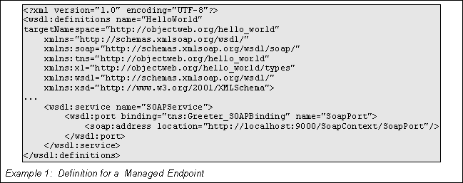
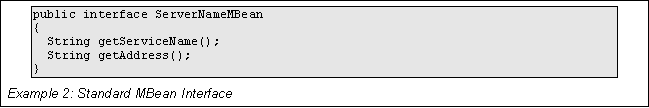
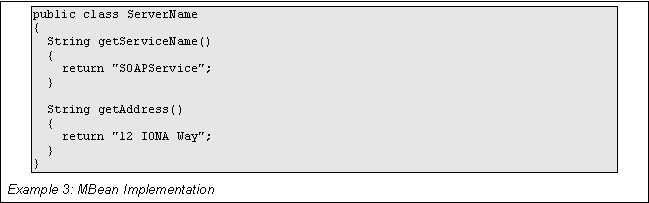
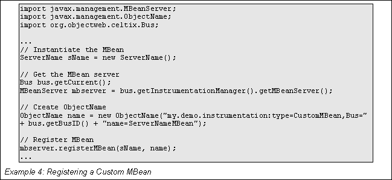
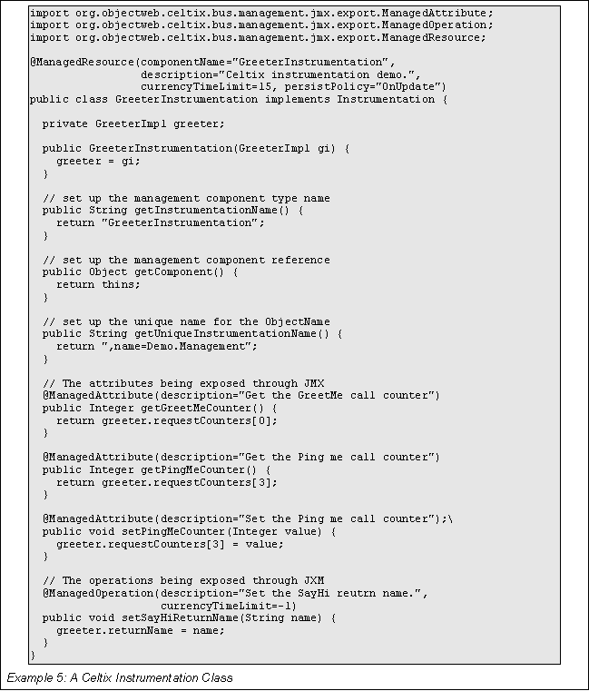
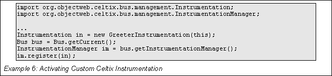
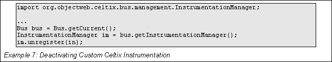
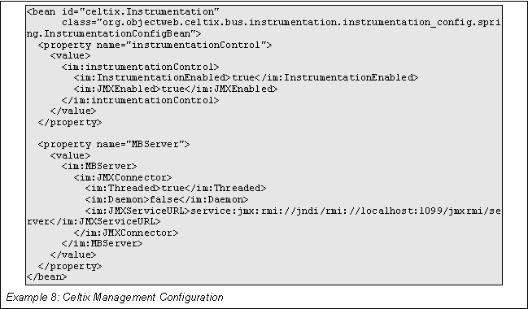

Using Celtix Management
Table of Contents
Celtix management features are implemented using the Java Management Extensions(JMX). These features include:
instrumentation of key Celtix runtime components as JMX MBeans
support for dynamically exposing the MBeans of the Celtix runtime components
support for static registration of custom MBeans
support for dynamic registration of custom MBeans
Once components of a Celtix-enabled application are exposed as MBeans they can be monitored and managed using any JMX compliant management console. They can also be monitored and managed using the JMXRemote APIs.
The following Celtix runtime components are instrumented and can be exposed as JMX MBeans:
The components are registered with the Celtix MbeanServer as Model Dynamic MBeans. They are named following the Guidelines laid out in the JMX best practices document at http://java.sun.com/products/JavaManagement/best-practices.html. All Celtix runtime MBeans are registered using org.objectweb.celtix.instrumentation as their domain name. The remaining properties used to make up each MBean's ObjectName is made up of a combination of the bus name and other information from the service's WSDL contract.
Table 1 lists the ObjectName for each of the instrumented Celtix components.
|
Component |
Properties |
|---|---|
|
CeltixBus |
type=Bus,name=busName |
|
WorkQueue |
type=Bus.WorkQueue,Bus=busName,name=WorkQueue |
|
WSDLManager |
type=Bus.WSDLManager,Bus=busName,name=WSDLManager |
|
Endpoint |
type=Bus.Endpoint,Bus=busName,Bus.Service=WSDLServiceQName,Bus.Port=WSDLPort,name=Endpoint |
|
HTTP Server Transport |
type=Bus.Service.Port.HTTPServerTransport,Bus=busName,Bus.Service=WSDLServiceQName,Bus.Port=WSDLPort,name=HTTPServerTransport |
|
JMS Server Transport |
type=Bus.Service.Port.JMSServerTransport,Bus=busName,Bus.Service=WSDLServiceQName,Bus.Port=WSDLPort,name=JMSServerTransport |
Table 1.: Instrumented Celtix Component ObjectNames

For
example, the MBean for the Endpoint component corresponding to the
port
element SOAPPort
shown in Example 1 would have the ObjectName
org.objectweb.celtix.instrumentation:type=Bus.Endpoint,Bus=hello_bus,Bus.Service={http://obejectweb.org/hello_world}SOAPService,Bus.Port=SoapPort,name=Endpoint.
The CeltixBus component is responsible for loading and managing the transports and bindings in use by a Celtix-enabled application. It also manages the flow of messages between the network and the WorkQueue that is responsible for processing the message.
Table 2 lists the managed attributes for the CeltixBus component.
|
Name |
Description |
Type |
Read/Write |
|---|---|---|---|
|
TransportFactories |
Specifies the list of all transport factories loaded by the bus instance |
String[] |
R |
|
BindingFactories |
Specifies a list of all binding factories loaded by the bus instance. |
String[] |
R |
|
ServiceMonitoring |
Specifies if transport performance monitoring is enabled. |
Boolean |
RW |
Table 2.: Managed Attributes for the CelixBus Component
The WorkQueue component manages the processing of messages by the servants implementing the service's business logic. It instantiates servants and passes data to and from them.
Table 3 lists the managed attributes for the WorkQueue component.
|
Name |
Description |
Type |
Read/Write |
|---|---|---|---|
|
ThreadingModel |
Specifies the threading model in use. Possible values are SINGLE_THREADED and MULTI_THREADED. |
String |
R |
|
WorkQueueSize |
Specifies the number of threads in the WorkQueue's thread pool. |
Integer |
R |
|
Empty |
Specifies if the WorkQueue is empty. |
Boolean |
R |
|
HighWaterMark |
Specifies the maximum threads available to the WorkQueue's thread pool. |
Integer |
RW |
|
LowWaterMarkr |
Specifies the minimum number of threads available in the WorkQueue's thread pool |
Integer |
RW |
|
Full |
Specifies if the WorkQueue is full. |
Boolean |
R |
Table 3.: Managed Attributes for the WorkQueue Component
The WSDLManager component provides a WSDL registry and a numer of methods to retrieve WSDL.
Table 4 lists the managed attributes for the WSDLManager component.
|
Name |
Description |
Type |
Read/Write |
|---|---|---|---|
|
Services |
Specifies the list of service elements loaded by the WSDL manager. The service elements are identified by their QName. |
String[] |
R |
|
Ports |
Specifies the list of port elements loaded by the WSDL Manager. The port elements are identified by the value of their name attribute. |
String[] |
R |
|
Bindings |
Specifies the list of binding elements loaded by the WSDL manager. The binding elements are identified by the value of their name attribute. |
String[] |
R |
Table 4.: Managed Attributes for the WSDLManager Component
Table 5 lists the operations supported by the WSDLManager component.
|
Name |
Description |
Parameters |
Return Type |
|---|---|---|---|
|
GetOperation |
Returns the list of operation elements for a given endpoint. The operation elements are identified by the value of their name attribute. |
serviceQName portTypeName |
String[] |
Table 5.: Operations Supported by the WSDLManager Component
The Endpoint component represents an endpoint running inside of the Celtix runtime. It allows you to monitor and control the state of an endpoint based on its service name and port name.
Table 6 lists the managed attributes for the Endpoint component.
|
Name |
Description |
Type |
Read/Write |
|---|---|---|---|
|
ServiceName |
Specifies the service QName implemented by the endpoint. |
String |
R |
|
PortName |
Specifies the port element used to register the endpoint. The port element is identified by the value of its name attribute. |
String |
R |
|
HandlerChains |
Specifies the list of MassageHandler objects used by the endpoint. The objects are identified by their class name. |
String[] |
R |
|
State |
Specifies the state of the service. Possible values are ... |
String |
R |
Table 6.: Managed Attributes for the Endpoint Component
Table 7 lists the operations provided by the Endpoint component.
|
Name |
Description |
Parameters |
Return Type |
|---|---|---|---|
|
start |
Activates the endpoint to accept requests. |
None |
Void |
|
stop |
Deactivates the endpoint. |
None |
Void |
Table 7.: Operations Provided by the Endpoint Component
The HTTPServerTransport component is created when the Endpoint component receives an HTTP address to instantiate. It provides a logical view of the HTTP transport for the service side.
Table 8 lists the managed attributes for the HTTPServerTransport component.
|
Name |
Description |
Type |
Read/Write |
|---|---|---|---|
|
ServiceName |
Specifies the QName of the service using this instance of the HTTP server transport. |
String |
R |
|
PortName |
Specifies the port element of the endpoint using this instance of the HTTP server tranport. The port element is identified by the value of its name attribute. |
String |
R |
|
URL |
Specifies the URL to which this instance of the HTTP server transport listens. |
String |
R |
|
TotalError |
Species the number of request processing errors handled by this endpoint. |
Integer |
R |
|
RequestTotal |
Specifies the number of requests received by this endpoint. |
Integer |
R |
|
RequestOneWay |
Specifies the number of oneway requests received by this endpoint. |
Integer |
R |
Table 8.: Managed Attributes for the HTTPServerTransport Component
The JMSServerTransport component is created when the Endpoint receives a JMS address to instantiate. It provides a logical view of the JMS transport for the service side.
Table 9 lists the managed attributes for the JMSServerTransport component.
|
Name |
Description |
Type |
Read/Write |
|---|---|---|---|
|
ServiceName |
Specifies the QName of the service using this instance of the HTTP server transport. |
String |
R |
|
PortName |
Specifies the port element of the endpoint using this instance of the HTTP server tranport. The port element is identified by the value of its name attribute. |
String |
R |
|
URL |
Specifies the URL to which this instance of the HTTP server transport listens. |
String |
R |
|
TotalError |
Species the number of request processing errors handled by this endpoint. |
Integer |
R |
|
RequestTotal |
Specifies the number of requests received by this endpoint. |
Integer |
R |
|
RequestOneWay |
Specifies the number of oneway requests received by this endpoint. |
Integer |
R |
Table 9.: Managed Attributes for the JMSServerTransport Component
Celtix supports the creation and registration of custom MBeans inside of Celtix-enabled applications. A service developer can create one or more MBeans to instrument their service. These custom MBeans can then be registered with the Celtix MBean server. This makes it possible to manage a service using the same interface as the Celtix runtime components.
There is two ways to add custom instrumentation to a Celtix-enabled application:
Functionally, there is no difference between the two approaches. You can base your decision on the ease of development, maintainability, and portability.
The Celtix MBean server can be accessed through the Celtix bus and allows for the registration of user developed MBeans. This allows you to instrument your service implementation by developing a custom MBean using one of the JMX MBean interfaces and registering it with the Celtix MBean server. Your custom instrumentation will then be accessible through the same JMX connection as the Celtix internal components used by your service.
When you use the JMX APIs to instrument your service implementation, you follow the design methodology laid out by the JMX specification. This involves the following steps:
Decide what type of MBean you wish to use.
Standard MBeans expose a management interface that is defined at development time.
Dynamic MBeans expose their management interface at run time.
Create the MBean interface to expose the properties and operations used to manager your service implementation.
Standard MBeans use the MBean inteface.
Dynamic MBeans use the DynamicMBean interface.
Implement the MBean class.

Example 2
shows the interface for a standard MBean.

Example 3
shows the class that implements the MBean defined in Example 2.
For your MBean to be exposed to a management console, it must be registered with the Celtix MBean server. The Celtix MBean server is accessible through the bus. Typically, this will be done when your service is initialized.
To register a custom MBean do the following:
Instantiate your custom MBean.
Get an instance of the the bus using Bus.getCurrent().
Get the Celtix MBean server from the bus using bus.getInstrumentationManager().getMBeanServer().
Create an ObjectName for your MBean.
Note: It is recommended that you follow the naming conventions suggested in Instrumented Celtix Components. However, you can choose any naming scheme you desire.
Register your MBean server using the server’s registerMBean() method.

Example 4
shows code for registering a custom MBean with the
Cetlix MBean server.
If you don not want to use the JMX APIs to add instrumentation to your service, you can use the Celtix Instrumentation interface. This interface wraps the JMX subsystem in a Celtix specific API. You do not need to access the Celtix MBean server to register your Instrumentation because the Celtix wrappers handle it all for you.
Note: You will, however, be responsible for cleaning up all instances of your custom instrumentation.
To add custom instrumentation using the Instrumentation interface do the following:
Write an instrumentation class that implements the org.objectweb.celtix.Instrumentation interface.
When your service is starting up, activate your instrumentation object by instantiating it and registering it with the bus.
When your service is shutting down, deactivate your instrumentation by unregistering it and cleaning it up.
Like an MBean a Celtix instrumentation class is responsible for providing access to the attributes you want to track and implement any management operations you want to expose. Unlike an MBean a Celtix instrumentation class does not implement a user defined interface. Instead, a Celtix instrumentation class implements a Celtix defined interface, Instrumentation, and defines the operations required to expose the attributes and operations you desire.
The Celtix management facilities use JDK 5.0 annotations to create a MBeanInfoAssembler. The MBeanInfoAssember reads the Celtix provided annotations to identify the attributes and operations that are to be exposed. It then uses the information to create a ModelMBean that is registered with the Celix MBean server.
Table 1 lists the JDK 5.0 annotations used when implementing your instrumentation class.
|
Purpose |
JDK 5.0 Annotation |
Attribute / Annotation Type |
|---|---|---|
|
Mark all instances of a class as a JMX managed resource |
@ManagedResource |
Class |
|
Mark a method as a JMX operation |
@ManagedOperation |
Method |
|
Mark a getter or a setter as one half of a JMX attribute |
@ManagedAttribute |
Method |
|
Describe the parameters of a managed operation |
@ManagedOperationParameter @ManagedOperationParameters |
Method |
Table 1.: Celtix JMX Annotations
Table 2 lists the metadata that can be provided along with the Celtix JMX annotations.
|
Parameter |
Description |
Annotation |
|---|---|---|
|
componentName |
Specifies the name of the managed respurce. |
ManagedResource |
|
description |
Specifies a user-friendly description of the resource, attribute, or operation. |
ManagedResource ManagedAttribute ManagedOperation ManagedOperationParameter |
|
currencyTimeLimit |
Specifies the value of the currencyTimeLimt descriptor field. |
ManagedResource ManagedAttribute |
|
defaultValue |
Specifies the value of the defaultValue descriptor field. |
ManagedAttribute |
|
log |
Specifies the value of the log descriptor field. |
ManagedResource |
|
logFile |
Specifies the value of the logFile descriptor field. |
ManagedResource |
|
persistPolicy |
Specifies the value of the persistPolicy descriptor field. |
ManagedResource |
|
persistPeriod |
Specifies the value of the persistPeriod descriptor field. |
ManagedResource |
|
persistLocation |
Specifies the value of the persistLocation descriptor field. |
ManagedResource |
|
persistName |
Specifies the value of the persistName descriptor field. |
ManagedResource |
|
name |
Specifies the display name of an operation parameter. |
ManagedOperationParameter |
|
index |
Specifies the index of an operation parameter. |
ManagedOperationParameter |
Table 2.: Celtix JMX Annotations Metadata
When you are implementing your custom instrumentation class, you should annotate the class with the ManagedResource attribute. Any management operation you wish to expose within the instrumentation class should be annotated with the ManagedOperation attribute. For attributes you wish to expose, you will should annotate their getter and setter methods with the ManagedAttribute attribute. If you want to make an attribute read-only or write-only, you can omit the annotation from either its setter method or its getter method.

Example 5
shows a Celtix instrumentation class.
To make your custom instrumentation available to management consoles you must create an instance of your instrumentation class and register it with the bus. The handles the creation of the ModelMBean to represent your instrumentation. It also handles the registration of the MBean with the MBean server.
To activate your custom instrumentation do the following:
Create an instance of your instrumentation class.
Get the current bus instance.
Get the InstrumentationManager from the bus.
Register your instrumentation instance with the InstrumentationManager.

Example 6
shows code for activating your custom instrumentation.
Unlike MBeans created using the JMX APIs, Celtix instrumentation classes must be cleaned up. You must explicitly tell the bus to remove the ModelMBean created for your instrumentation using the InstrumentationManager.unregister() method. This method removes the MBean from the Celtix MBean server, destroys the associated ModelMBean, and frees up any resources used by it.

Example 7
shows code for deactivating your custom instrumentation.
The Celtix management configuration is specified using the org.objectweb.celtix.bus.instrumentation.instrumentation_config.spring.InstrumentationConfigBean class. This class consists of two properties:
im:instrumentationControl configures the instrumentation event listener that collects the JMX provided data.
im:MBServer configures the JMXConnectorServer that runs the Celtix MBean server.
In order to use the management configuration you are must specify the namespace under which the Celtix management configuration properties are defined. You do this by adding the line shown below to the beans element of your configuration file.
Table 1 lists the values for the im:instrumentationControl property.
|
Value |
Description |
|---|---|
|
InstrumentationEnable |
Specifies if the Celtix runtime's instrumentation created and removed events are enabled or disabled. |
|
JMXEnable |
Specifies if the Celtix JMX MBean register and unregister events are enabled or disabled. |
Table 1.: instrumentationControl Values
Table 2 lists the values for the im:MBServer property.
|
Value |
Description |
|---|---|
|
JMXConnector |
Specifies how to set up the JMXConnectorServer which provides the remote connection to a JMXServer. This value has three sub-values:
|
Table 2.: MBServer Values

Example 8
shows the management configuration for a Celtix-enabled
application.
For more information on configuring Celtix see the Celtix Configuration Guide.
Celtix runtime MBeans can be accessed remotely using JMXRemote. This means that any management console that supports JMXRemote can be used to monitor and manage Celtix-enabled applications.
As a starting point, JDK 1.5 provides a lightweight JMX console called jconsole. To view the management information for a deployed Celtix-enabled application using jconsole do the following:
Launch the jconsole application using the command JDK_HOME/bin/jconsole.
Select the Advanced tab.
Enter the URL of your Celtix MBean server in the JMXServiceURL field.
The URL of your Celtix MBean server will either be the default Celtix JMXServiceURL or the value specified by the JMXServiceURL property in your application configuration.